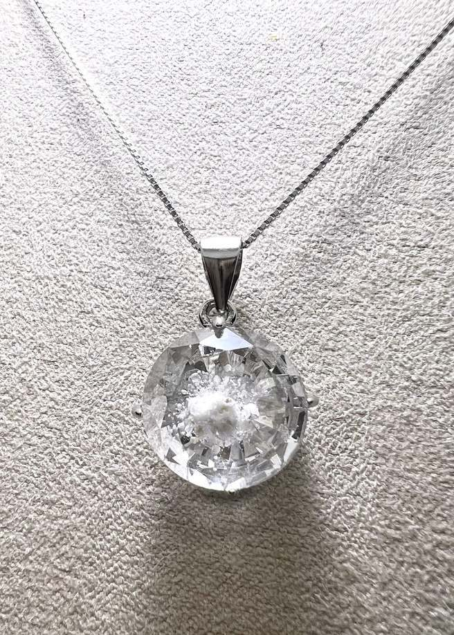
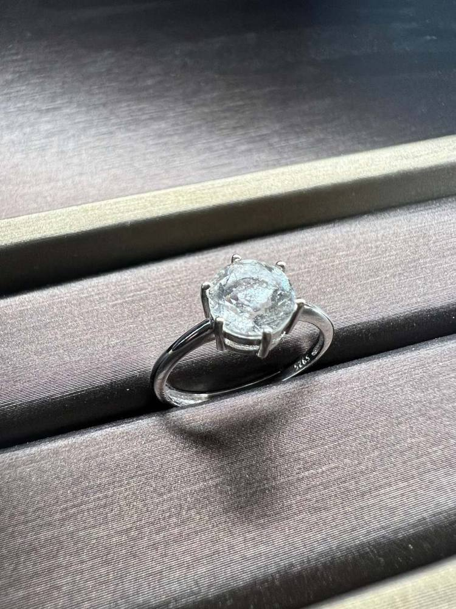
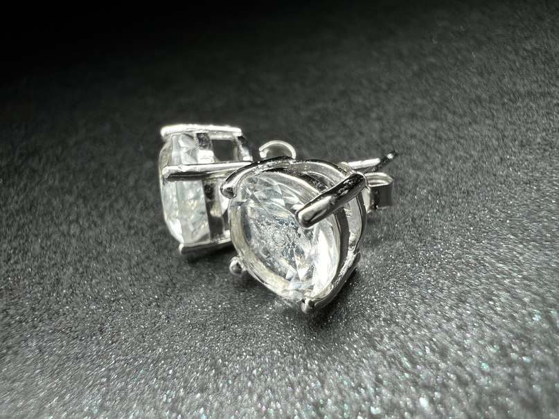
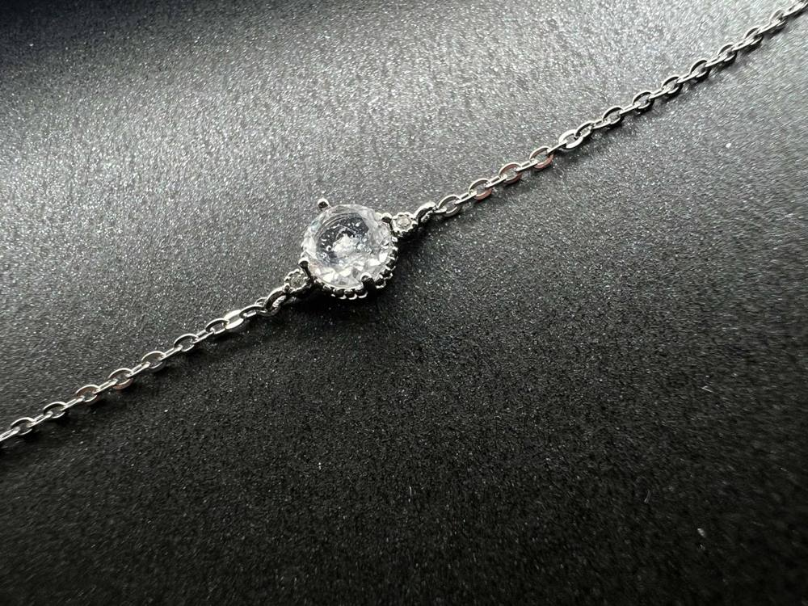
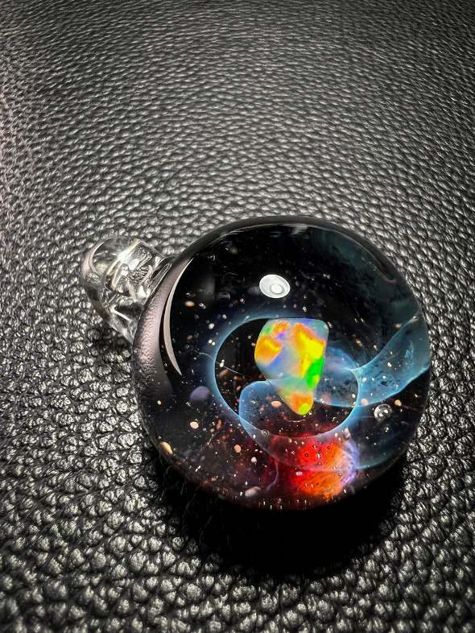
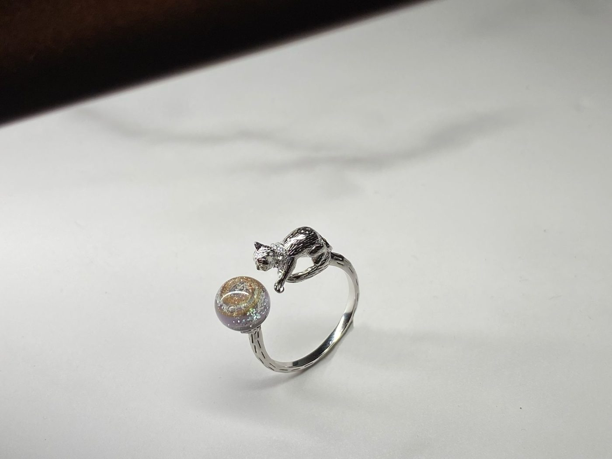
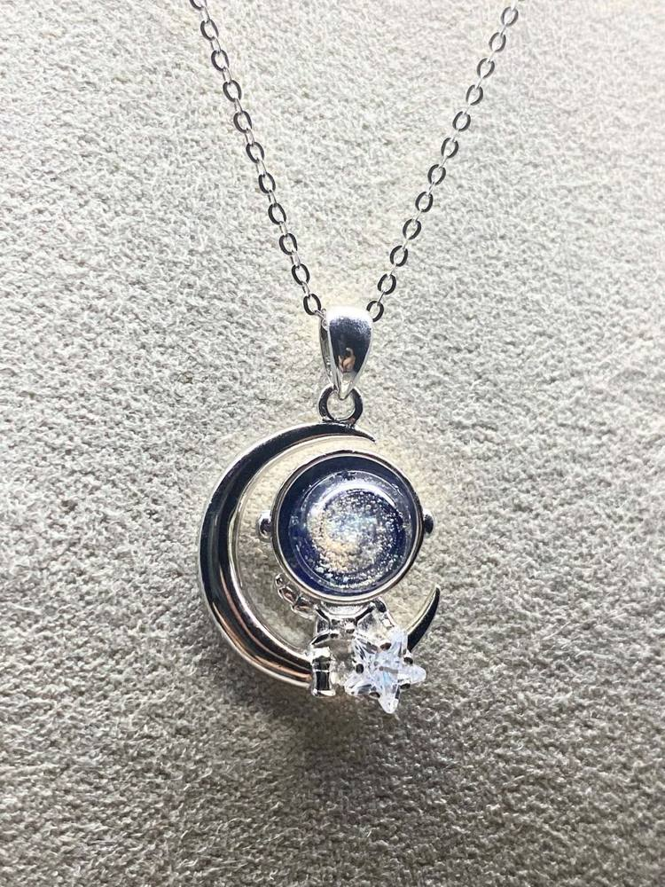
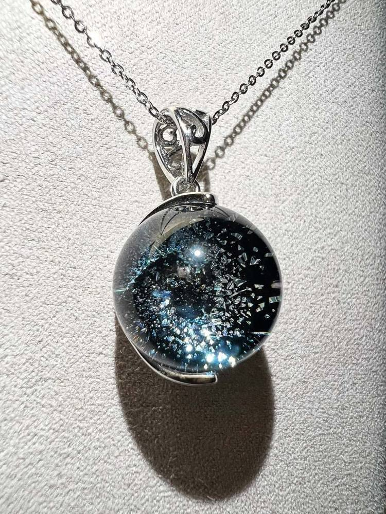

SHOP ・ 現貨選購
現貨選購
玻璃鑽石與實驗室鑽石為現貨供應。宇宙玻璃為手工逐顆燒製，需時製作。
 玻璃鑽石項鍊 ・ 寶藍圓形切割[售價]
玻璃鑽石項鍊 ・ 寶藍圓形切割[售價]

玻璃鑽石項鍊 ・ 全透明圓形切割 6–9mm[售價]
玻璃鑽石戒指圓形切割 6–7mm ・ 純銀[售價]
玻璃鑽石純銀耳針一對 ・ 圓形切割 6–7mm[售價]
玻璃鑽石手鍊圓形切割 6–7mm[售價] [產品相片]實驗室鑽石戒指[克拉數] ・ [金屬][售價] [產品相片]實驗室鑽石項鍊[克拉數] ・ [金屬][售價] [產品相片]實驗室鑽石耳環[克拉數] ・ [金屬][售價] [產品相片]實驗室鑽石手鍊[克拉數] ・ [金屬][售價] 銀河漩渦項鍊直徑 10–14mm ・ 純銀扣NT$4,980 起
銀河漩渦項鍊直徑 10–14mm ・ 純銀扣NT$4,980 起

蛋白石星球項鍊直徑 14–20mm ・ 天然蛋白石NT$8,800 起
小貓咪純銀戒指小宇宙系列 ・ 直徑 7–9mmNT$3,980 起
月亮太空人項鍊小宇宙系列 ・ 直徑 9–10mmNT$4,580 起
銀閃雪花項鍊限量系列 ・ 直徑 10–14mmNT$4,980 起 星環串珠純銀手鍊彩色漩渦串珠 ・ 純銀墊片NT$7,880 起
星環串珠純銀手鍊彩色漩渦串珠 ・ 純銀墊片NT$7,880 起
沒有符合條件的作品，試試放寬篩選。